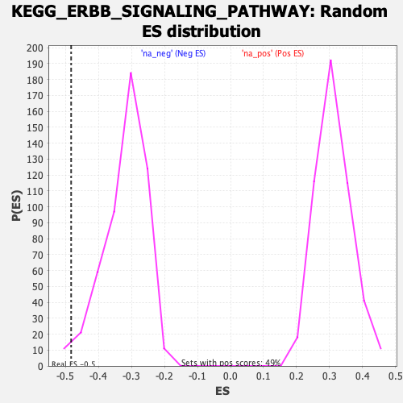

| | | Dataset | DE_genes |
| Phenotype | NoPhenotypeAvailable |
| Upregulated in class | na_neg |
| GeneSet | KEGG_ERBB_SIGNALING_PATHWAY |
| Enrichment Score (ES) | -0.4830204 |
| Normalized Enrichment Score (NES) | -1.5073481 |
| Nominal p-value | 0.01775148 |
| FDR q-value | 0.1783114 |
| FWER p-Value | 0.849 |
Table: GSEA Results Summary
 Fig 1: Enrichment plot: KEGG_ERBB_SIGNALING_PATHWAY
Fig 1: Enrichment plot: KEGG_ERBB_SIGNALING_PATHWAY
Profile of the Running ES Score & Positions of GeneSet Members on the Rank Ordered List
| SYMBOL | RANK IN GENE LIST | RANK METRIC SCORE | RUNNING ES | CORE ENRICHMENT | | 1 | ABL1 | 373 | 14.596 | 0.0158 | No |
| 2 | RAF1 | 446 | 13.618 | 0.0448 | No |
| 3 | PLCG1 | 455 | 13.495 | 0.0768 | No |
| 4 | MYC | 1378 | 7.849 | 0.0480 | No |
| 5 | KRAS | 1633 | 7.027 | 0.0518 | No |
| 6 | JUN | 2055 | 5.971 | 0.0444 | No |
| 7 | PIK3R1 | 2162 | 5.736 | 0.0527 | No |
| 8 | MTOR | 2308 | 5.424 | 0.0582 | No |
| 9 | CRK | 2471 | 5.124 | 0.0621 | No |
| 10 | HRAS | 2476 | 5.112 | 0.0742 | No |
| 11 | PAK5 | 2536 | 5.003 | 0.0832 | No |
| 12 | MAP2K4 | 2656 | 4.784 | 0.0885 | No |
| 13 | PAK3 | 2661 | 4.768 | 0.0998 | No |
| 14 | NRAS | 2718 | 4.663 | 0.1081 | No |
| 15 | NRG4 | 3160 | 3.974 | 0.0948 | No |
| 16 | RPS6KB1 | 3503 | 3.527 | 0.0856 | No |
| 17 | AKT1 | 3649 | 3.349 | 0.0862 | No |
| 18 | ELK1 | 4493 | 2.393 | 0.0484 | No |
| 19 | NRG1 | 4607 | 2.277 | 0.0480 | No |
| 20 | MAPK9 | 4661 | 2.225 | 0.0506 | No |
| 21 | RPS6KB2 | 5099 | 1.857 | 0.0325 | No |
| 22 | PLCG2 | 5772 | 1.365 | 0.0011 | No |
| 23 | PAK2 | 5897 | 1.295 | -0.0022 | No |
| 24 | NCK2 | 6088 | 1.179 | -0.0092 | No |
| 25 | PIK3R3 | 6224 | 1.103 | -0.0135 | No |
| 26 | MAPK1 | 6292 | 1.056 | -0.0144 | No |
| 27 | CRKL | 7291 | 0.566 | -0.0646 | No |
| 28 | PAK6 | 7373 | 0.534 | -0.0675 | No |
| 29 | AKT3 | 7426 | 0.517 | -0.0690 | No |
| 30 | MAP2K2 | 7909 | 0.344 | -0.0930 | No |
| 31 | GRB2 | 7992 | 0.315 | -0.0965 | No |
| 32 | EIF4EBP1 | 8340 | 0.219 | -0.1139 | No |
| 33 | PAK4 | 8517 | 0.174 | -0.1226 | No |
| 34 | CDKN1A | 9347 | -0.000 | -0.1654 | No |
| 35 | BRAF | 9699 | -0.061 | -0.1834 | No |
| 36 | BAD | 10388 | -0.223 | -0.2184 | No |
| 37 | PRKCB | 10631 | -0.280 | -0.2302 | No |
| 38 | GAB1 | 10782 | -0.321 | -0.2372 | No |
| 39 | ABL2 | 10920 | -0.361 | -0.2434 | No |
| 40 | MAP2K7 | 11001 | -0.386 | -0.2466 | No |
| 41 | MAPK8 | 11357 | -0.495 | -0.2638 | No |
| 42 | AKT2 | 11863 | -0.654 | -0.2883 | No |
| 43 | EGFR | 11939 | -0.673 | -0.2906 | No |
| 44 | PIK3CG | 12011 | -0.698 | -0.2926 | No |
| 45 | NCK1 | 12196 | -0.760 | -0.3002 | No |
| 46 | PTK2 | 12266 | -0.791 | -0.3019 | No |
| 47 | PIK3R5 | 12453 | -0.880 | -0.3094 | No |
| 48 | PIK3R2 | 12553 | -0.914 | -0.3123 | No |
| 49 | CAMK2D | 12912 | -1.067 | -0.3282 | No |
| 50 | AREG | 13786 | -1.522 | -0.3697 | No |
| 51 | BTC | 13853 | -1.570 | -0.3693 | No |
| 52 | ARAF | 13887 | -1.594 | -0.3672 | No |
| 53 | SHC2 | 13965 | -1.651 | -0.3672 | No |
| 54 | CAMK2G | 14152 | -1.779 | -0.3725 | No |
| 55 | HBEGF | 14387 | -1.953 | -0.3799 | No |
| 56 | STAT5B | 14425 | -1.980 | -0.3771 | No |
| 57 | STAT5A | 15269 | -2.700 | -0.4142 | No |
| 58 | CBL | 15302 | -2.735 | -0.4092 | No |
| 59 | PIK3CD | 15425 | -2.861 | -0.4087 | No |
| 60 | MAPK10 | 16363 | -4.022 | -0.4474 | No |
| 61 | PIK3CA | 16695 | -4.544 | -0.4536 | No |
| 62 | SHC1 | 16771 | -4.661 | -0.4463 | No |
| 63 | MAP2K1 | 16969 | -5.022 | -0.4444 | No |
| 64 | CBLC | 17236 | -5.553 | -0.4448 | No |
| 65 | PIK3CB | 17977 | -7.583 | -0.4648 | Yes |
| 66 | TGFA | 18013 | -7.708 | -0.4481 | Yes |
| 67 | EREG | 18021 | -7.744 | -0.4299 | Yes |
| 68 | SOS2 | 18236 | -8.615 | -0.4202 | Yes |
| 69 | GSK3B | 18458 | -9.706 | -0.4083 | Yes |
| 70 | SRC | 18638 | -10.726 | -0.3918 | Yes |
| 71 | NRG2 | 18666 | -10.936 | -0.3669 | Yes |
| 72 | SHC3 | 18676 | -11.018 | -0.3409 | Yes |
| 73 | CDKN1B | 18716 | -11.339 | -0.3157 | Yes |
| 74 | CBLB | 18788 | -11.912 | -0.2908 | Yes |
| 75 | SOS1 | 18859 | -12.696 | -0.2639 | Yes |
| 76 | PRKCG | 18996 | -14.427 | -0.2363 | Yes |
| 77 | PAK1 | 19079 | -15.472 | -0.2033 | Yes |
| 78 | ERBB2 | 19099 | -16.175 | -0.1655 | Yes |
| 79 | MAPK3 | 19306 | -22.728 | -0.1215 | Yes |
| 80 | PRKCA | 19333 | -24.705 | -0.0635 | Yes |
| 81 | ERBB3 | 19377 | -28.673 | 0.0032 | Yes |
Table: GSEA details [plain text format]

Fig 2: KEGG_ERBB_SIGNALING_PATHWAY: Random ES distribution
Gene set null distribution of ES for KEGG_ERBB_SIGNALING_PATHWAY